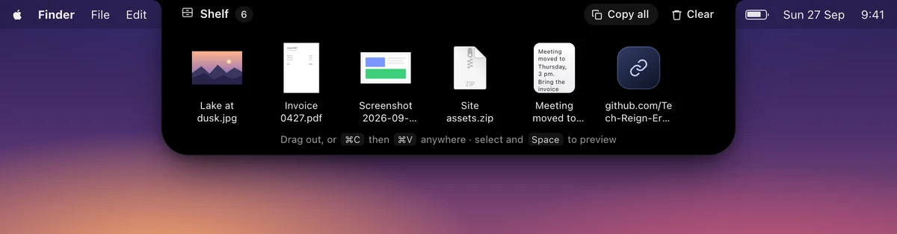
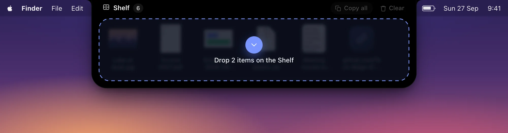
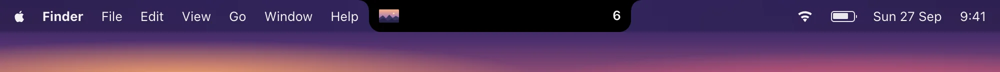
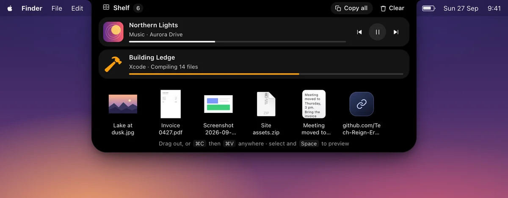
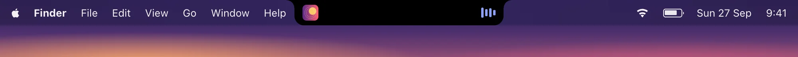
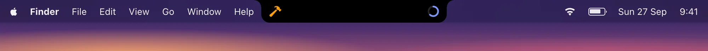
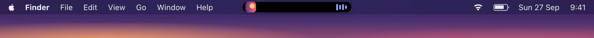

Free & open source · for Mac
A Shelf in your notch. Drop it there, pick it up later.
Drag files, text and links to the top of your screen and Ledge keeps them there for a moment, then you drag them out wherever they need to go. While music plays or an app is busy, the notch shows it, like the Dynamic Island on iPhone.
Free · One download for Apple silicon and Intel · macOS 13 Ventura or later
Ledge is a Mac app. Open this page on your Mac to download it, or .
- Free, no catch
- Open source (MIT)
- About 1 MB
- Files never copied or moved
The Shelf
Somewhere to put things down
Moving a file from one window to another, and the other window is buried? Drop it on the notch, find the other window, and take it back off.

- Drag anything toward the notch and the Shelf opens before you get there. Files, folders, text and links all work.
- Drag them out to Finder, Mail, Slack or a browser's upload box. Or select them, press ⌘C, and ⌘V anywhere.
- Hover to peek, or press ⌃⌥S from any app to open it.
- Space opens Quick Look, just like in Finder. ⌘V in the Shelf adds whatever you copied.
- Files are kept by reference: Ledge never copies, moves or changes them.
- Closed, it's out of the way: just the newest item on one side of the notch and a count on the other.


Live activities
What's happening, right in the notch
Like the Dynamic Island on iPhone, the notch shows what's going on, and grows out of itself when you hover.



- Music: while Apple Music or Spotify plays, the album artwork and bars that move to the music itself, bass to treble. Hover for the song, a progress bar, and play, pause and skip.
- Nothing is recorded. On macOS 14.2 or later, macOS asks once for System Audio Recording so the bars can follow the sound. Nothing is saved.
- Other apps can show a build, an upload or a timer, with a title, a symbol or emoji, and progress.
- Settings let you make the pill wider, taller or lower, open it on hover or only on a click, and pick the bars' colour.
For developers
Show your app in the island
There's no SDK. Any app or script can start, update and end a live activity by opening a URL, or by posting a notification.
Everything is treated as untrusted: text is shown as text, never as markup, and at most four app activities show at once. All the fields are in the README.
# Start (or update) an activity
open -g "ledge://activity?id=build&title=Building&symbol=hammer.fill&progress=0.4"
# Update only what changed
open -g "ledge://activity?id=build&progress=0.9"
# End it
open -g "ledge://activity/end?id=build"No notch? No problem.
Works on every screen
On an external display, a Mac mini, or any Mac without a notch, the island is a small pill in the middle of the menu bar. It's always there to drop onto, and grows out of itself when you hover.

Tiny
About 1 MB, and quiet
The Shelf used to be part of Inlet, built with Electron. Ledge is the same design running in the WebKit that ships with macOS, with a few hundred lines of Swift and no dependencies.
Ledge, the whole app. The download is about 620 KB.
Inlet's Electron build, where the Shelf used to live.
- Uses no CPU while it waits. Nothing animates that you can't see.
- Private. No account, no analytics. Its only network requests fetch the artwork of the song Spotify is playing, and check GitHub for updates (you can turn that off).
Install
Up and running in a minute
One download works on every Mac, Apple silicon and Intel alike. Needs macOS 13 Ventura or later.
-
1
Download
Get Ledge.pkg from the button below, or from GitHub Releases.
-
2
Open it the first time
Right-click the
.pkg, choose Open, then Open again. See the note below for why. -
3
Install
Click Continue and Install. Ledge opens by itself: hover over the notch, or drag something to it.
FAQ
Questions
Is Ledge really free?
Yes. No trial, no subscription, no ads, no account. It's open source under the MIT license, made by Tech Reign Era Services.
What happens to a file I put on the Shelf?
Nothing. Ledge only remembers where the file is. It's never copied, moved or changed, and removing it from the Shelf leaves the file where it was.
My Mac doesn't have a notch. Does it work?
Yes. Without a notch, like on an external display or a Mac mini, the island is a small pill in the middle of the menu bar.
Why does it ask to record system audio?
So the music bars can move to the song that's playing, bass to treble. It listens to Apple Music or Spotify only while they play, and nothing is recorded or saved. Say no and the bars simply dance by themselves. This needs macOS 14.2 or later.
I used the Shelf in Inlet. What happens to my items?
The first time Ledge runs, it brings over anything that was on Inlet's Shelf.
How do I update?
Download the new installer and run it. It quits Ledge for you and keeps your Shelf and settings. To hear about new versions, open the GitHub page, click Watch, and choose Releases.
How do I uninstall it?
Choose Quit Ledge from its menu bar icon and move it from Applications to the Trash. To remove its settings too, delete ~/Library/Application Support/Ledge. Your files aren't touched.
I found a bug or have an idea.
Please open an issue. Pull requests are welcome too.
Give your notch something to do
Free, open source, and yours to keep.
Free · One download for Apple silicon and Intel · macOS 13 Ventura or later